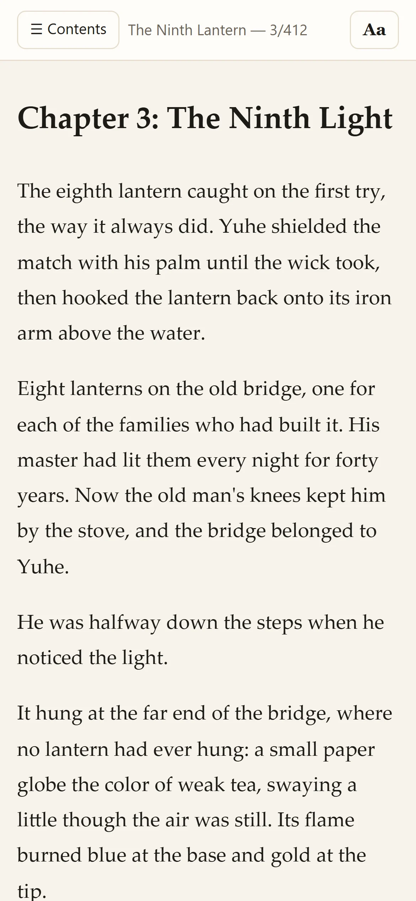
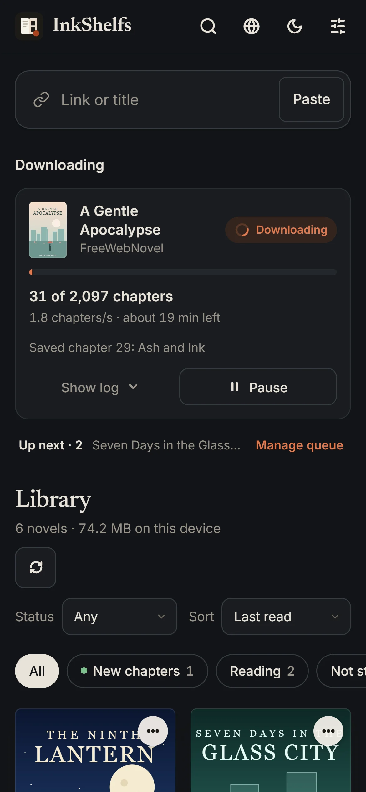
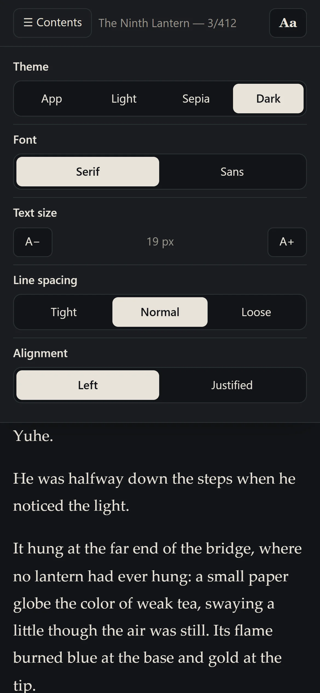

The next chapter, on the train.
NovelArchiver saves the web novels you follow to your PC or phone, so you can read on the commute, at lunch, or wherever the signal drops. No ads in the middle of a chapter, no pop-ups, no waiting for pages to load.

Made for the gaps in your day
Web novel sites are built to be read online, one page load and one ad at a time. That’s fine at a desk. It’s miserable in a tunnel.
Chapters are on your phone before you leave. Underground, in a dead zone, on a flight: the next page is already there.
No autoplay video, no full-screen pop-ups, no “continue in our app”. Just the chapter, in a quiet reader you can set the way you like.
Following ten ongoing novels? One tap on Get new chapters brings in everything that came out since yesterday, and shows you which ones have something new.
Paste a link. See what you’ll get first.
Paste a novel page or any chapter link. NovelArchiver looks it up and shows the poster, how many chapters there are, and anything worth knowing, before a single chapter downloads.
- Everything, a range, or from the chapter you’re on
- Choose the speed, and whether to keep chapter images
- Paid or locked chapters are skipped and stay locked

Downloads that don’t get in the way
Add more novels while one is downloading; they wait their turn. Switch to another app or turn the screen off and it keeps going, with its progress in a notification. When your novels get new chapters, Get new chapters catches them all up at once.
- Get new chapters: only what came out since last time, for every ongoing novel
- Keeps downloading in the background, with a Pause button in the notification
- Retry fetches only the chapters that failed; “Only on Wi-Fi” if you like


A reader that stays out of the way
Light, sepia or dark. Serif or sans. The text size, spacing and width you like, set once for every novel. Formatting comes through intact, including the “system” status boxes LitRPG stories live on.
The ninth lantern caught on the first try. Yuhe hooked it onto the iron arm above the water and waited.
Lanterns lit tonight: 9
Lanterns recorded: 8
He read the words twice. The ledger had never spoken to him before.

The same library on your PC
On Windows you get the same library and reader in a desktop window, with room for the full chapter list, 100 chapters a page. Export any novel as an EPUB for Kindle, Play Books, Apple Books or KOReader, and back up the whole library to one file.
Installing: about the warnings
NovelArchiver is free and isn’t sold through the Microsoft Store or Google Play, so it isn’t signed with a paid publisher certificate. The first time you open it, Windows or Android will warn about an unknown app. That’s expected; here’s exactly what to tap.
Windows 10 and 11
Microsoft Defender SmartScreen blocks apps it hasn’t seen many people run yet.
- Your browser may say “NovelArchiver.exe isn’t commonly downloaded”. In Edge choose ⋯, Keep, then Keep anyway.In Chrome, choose Keep on the download.
- Open
NovelArchiver.exe. A blue box says “Windows protected your PC”. Click More info, the small link under the text. - The publisher shows as “Unknown publisher”. Click Run anyway.Windows asks once for each new version.
Android 7 and newer
Android protects you from apps that don’t come from Google Play, so it asks you to allow this one.
- Chrome may say “File might be harmful”. Tap Download anyway.
- Open the downloaded
.apk. If you see “not allowed to install unknown apps from this source”, tap Settings, turn on Allow from this source, then go back. - Tap Install. If Play Protect warns about an “unknown developer”, tap More details, then Install anyway.If it offers to scan the app, either choice is fine.
- Updating later? Install the new
.apkover the old one. Your library stays.
Get-FileHash $HOME\Downloads\NovelArchiver.exe
Works with the sites you read
- NovelBin
- NovelFull
- ReadNovelFull
- NovelPing
- Royal Road
- WuxiaWorld
- ScribbleHub
- FreeWebNovel
- NovelFire
- EmpireNovel
- Webnovel (free chapters)
Other sites open in a general reader mode. Site layouts change; when one breaks, its rules can be fixed without a new release.
What’s new in 2.1
- Catch upGet new chapters checks every ongoing novel and downloads only what came out since last time. A New chapters filter shows which ones have something to read.
- BackgroundOn Android, downloads keep going when you switch apps or turn the screen off, with progress in a notification.
- ReadingFont, size, spacing, width and theme, on the novel page, in Settings, or with Aa while you read.
- UpdateA novel’s new chapters, edited chapters and new poster in one go, with a summary of what changed. Retry fetches only what failed.
- QueueAdd novels while one downloads. Pause, resume, or take one out.
- BackupThe whole library, reading places and settings in one file. Restoring merges; it never deletes.
- AndroidNotifications, “Only on Wi-Fi”, and human checks that pass inside the app.
Questions
Is it free?
Yes, and open source. There are no accounts, no subscriptions and no ads in the app.
Does it work without internet?
Reading does. You need a connection to download chapters and to get new ones; after that everything opens offline.
Can I use other apps while it downloads?
Yes. On Android a notification shows the progress and the download carries on in the background, even with the screen off. Some phones (Xiaomi, Oppo, Realme, Vivo) stop background apps aggressively; if yours does, set NovelArchiver’s battery use to “Unrestricted”.
Will it download paid or locked chapters?
No. Paid chapters are skipped and stay locked on the site. NovelArchiver only saves what the site already shows you for free.
A site asked me to verify I’m human. Now what?
The download pauses and a site window opens. Tick the check yourself and the download carries on. The app never solves or skips these checks for you.
Does it send my library anywhere?
No. Chapters are saved on your device and read from there. Backups are a file you keep wherever you like.
Can I move my library to a new phone or PC?
Yes. Settings → Back up saves everything to one file; Restore on the new device merges it in.